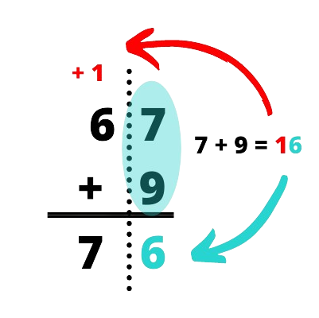
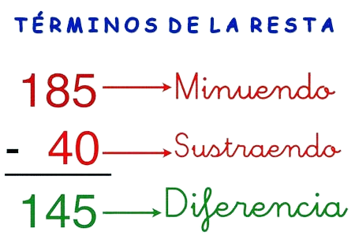
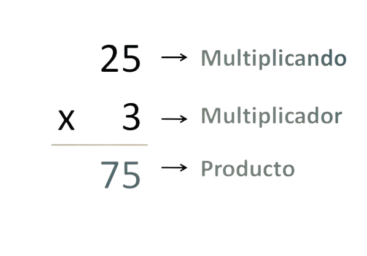
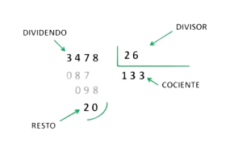

Calculadora Online
Una suma (del latín summa) es el agregado de cosas. El término hace referencia a la acción y efecto de sumar o añadir.
La suma o adhesión consiste en añadir dos números o más para obtener una cantidad total.
El proceso también permite reunir dos grupos de cosas para obtener un único conjunto.
Ejemplo
A los números que intervienen en una suma se les denomina sumandos, al resultado de la operación lo llamamos suma o resultado.
Por ejemplo, en el caso de la operación , el sesenta y siete y el nueve son los sumandos y el setenta y seis es la suma o resultado.

La resta o sustracción es una operación matemática que se representa con el signo de restar o signo menos "-", y consiste en eliminar una cantidad respecto a otra.
Se pueden restar números enteros, números con decimales, números negativos
La resta no sigue la propiedad conmutativa, lo que quiere decir que si se cambia el orden de los factores, sí que se altera el resultado final, en concreto el signo positivo o negativo.
Ejemplo
Al número que se le quita o se le sustrae es denominado minuendo, el número que resta o sustrae es llamado sustraendo y,
finalmente, al resultado se le conoce como resta o diferencia de los números.

Multiplicar es una operación más eficaz que sumar muchas veces el mismo número. La palabra multiplicación viene del latín multiplicatio,
que significa «aumentar el número de la misma cosa»
Ejemplo
Factores: Los factores son los números que se multiplican.
Producto: El producto es el resultado de la multiplicación.
Multiplicando: El multiplicando es el factor que se encuentra arriba en la multiplicación.
Multiplicador: El multiplicador es el factor que se encuentra debajo del multiplicando.

La división es la operación matemática inversa a la multiplicación. Cosiste en encontrar cuántas veces está contenido un número en otro.
REGLA PARA DIVIDIR
1.- Se empieza desde la izquierda.
2.- Se reparten las cifras del dividendo entre las del divisor.
3.- Se divide utilizando las tablas de multiplicar al revés.
4.- Se multiplica la cifra del cociente por el divisor y se resta del dividendo.
Si no se puede restar se prueba con un número menor.
5.- Se toma la siguiente cifra del dividendo inicial y se repite este proceso hasta
haber tomado todas las cifras.
Ejemplo
En una operación de división, el dividendo es el número que se divide, el divisor es el número por el cual se divide el dividendo,
el cociente es el resultado de la división y el residuo es la cantidad que queda después de realizar una división que no es exacta,
es decir, el número que "sobra".
